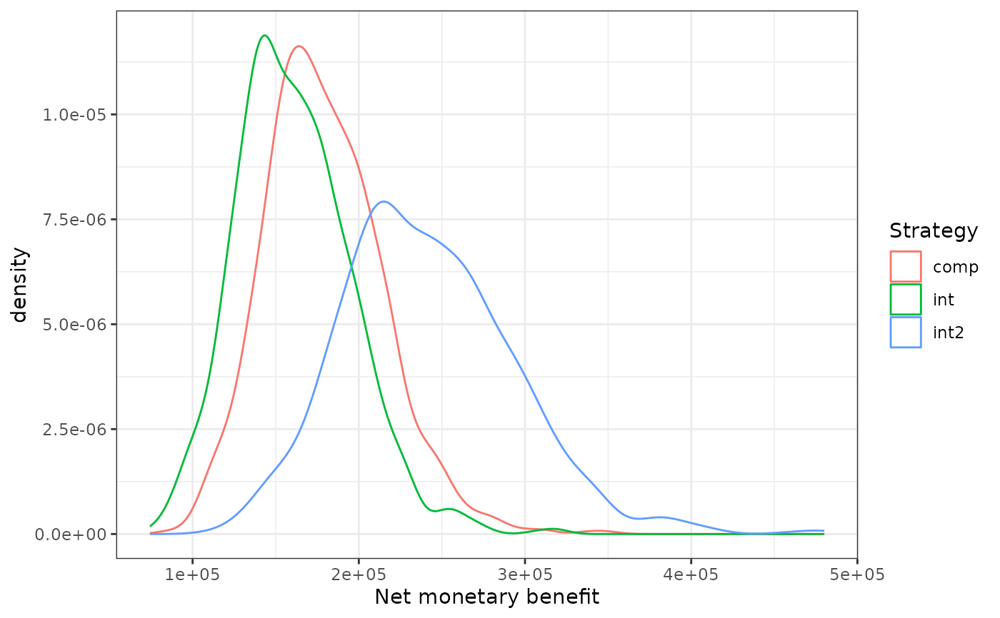

This function plots the Net Monetary Benefits (NMB) and Net Health Benefits (NHB) for an infinite amount of strategies.
Arguments
- df
a dataframe.
- outcomes
character. Vector of variable names containing the outcomes to be plotted on the x-axis. The variable names should be structured as follows: 't_qaly_d_' followed by the name of the strategy: e.g. 't_qaly_d_intervention'.
- costs
character. Vector of variable names containing the costs to be plotted on the y-axis. The variable names should be structured as follows: 't_costs_d_' followed by the name of the strategy: e.g. 't_costs_d_intervention'.
- wtp
numeric. Willingness-to-pay thresholds to use for NMB and NHB calculations.
- NMB
logical. Should the NMBs be plotted? Default is TRUE, if FALSE, NHBs are plotted.
Examples
# Plot NMB's at a 50,0000 euro WTP threshold for three strategies
data("df_pa")
df_pa$t_qaly_d_int2 <- df_pa$t_qaly_d_int * 1.5
df_pa$t_costs_d_int2 <- df_pa$t_costs_d_int * 1.5
plot_nb_mult(df = df_pa,
outcomes = c("t_qaly_d_int2", "t_qaly_d_int", "t_qaly_d_comp"),
costs = c("t_costs_d_int", "t_costs_d_int2", "t_costs_d_comp"),
wtp = 50000)
